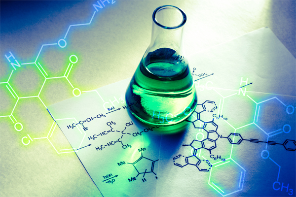

Organic chemistry is a branch of chemistry that focuses on the study
of carbon-containing compounds, which are the building blocks of
life.
It is a diverse and central field within chemistry, essential to
understanding the molecular composition and behavior of a wide
range of substances.
Carbon is the foundational element in organic chemistry due to its
unique ability to form stable covalent bonds with other carbon atoms
and various other elements. These covalent bonds can create an
immense variety of compounds, including hydrocarbons (compounds
consisting of only carbon and hydrogen), which are the basis of many
organic molecules.
Key classes of organic compounds include alkanes (saturated
hydrocarbons), alkenes (unsaturated hydrocarbons with double
bonds), alkynes (unsaturated hydrocarbons with triple bonds), and
aromatic compounds (containing benzene rings). The structure of
organic
molecules can be represented using structural formulas, line-
angle formulas, or condensed structural formulas, which provide
valuable information about the arrangement of atoms in a compound.
Functional groups are specific atom or group arrangements within
organic molecules that determine their chemical properties and
reactivity.
Examples of common functional groups include
alcohols,
aldehydes, ketones, carboxylic acids, and amines
. These groups
significantly influence
the behavior of the molecules they are a part of,
allowing organic chemists to predict and control chemical reactions.
One of the fundamental aspects of organic chemistry is
understanding chemical reactions. Organic reactions involve the
breaking
and forming of covalent bonds, and they are classified into
various types, including addition, elimination, substitution, and
rearrangement reactions.
Understanding these reactions is essential
for designing and controlling chemical processes, whether in the
laboratory or in industrial applications.
Isomerism is a prevalent concept in organic chemistry. Isomers are
compounds with the same molecular formula but different structural
arrangements or spatial orientations. Structural isomers have
different connectivity patterns, while stereoisomers have the same
connectivity
but differ in the spatial arrangement of atoms.
Understanding isomerism is crucial for recognizing the diversity and
complexity of organic compounds.

Nomenclature, or naming organic compounds, is another important
aspect of organic chemistry.
The International Union of Pure and
Applied Chemistry (IUPAC)
provides standardized
rules for naming
organic molecules, ensuring clarity and consistency in
communication
among chemists. Organic nomenclature can be quite
detailed and relies on the systematic
identification of functional
groups, parent chains, and substituents.
Organic chemistry plays a pivotal role in various scientific and
industrial applications.
It is crucial in the synthesis of
pharmaceuticals, agrochemicals, and materials.
Medicinal chemistry,
a subfield of organic chemistry, is dedicated to designing and
developing drugs to treat various diseases.
The discovery of new
drugs often involves modifying the structure of organic molecules to
optimize their pharmacological properties.
In the field of materials science, organic chemistry is instrumental in
the development of polymers, plastics, and advanced materials.
The
versatility of carbon chemistry allows for the creation of polymers
with tailored properties, making them indispensable in modern
manufacturing.
Environmental chemistry is another area where organic chemistry has
a significant impact. The study of pollutants, toxins,
and the
degradation of organic compounds in the environment is vital for
addressing issues like pollution, waste management, and
sustainability.
In conclusion, organic chemistry is the study of carbon-containing
compounds, with a focus on their structure, reactivity, and properties.
It is a foundational discipline that underpins many scientific and
industrial applications, from drug development to materials science
and environmental protection. Organic chemistry continues to be a
dynamic and evolving field, contributing to our understanding of the
complex
world of carbon-based molecules and their diverse
applications in our everyday lives.